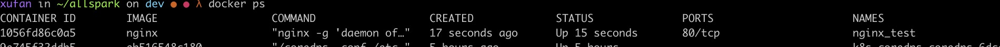

Docker使用Google公司推出的Go语言进行开发实现，基于Linux内核的 cgroup，namespace，以及AUFS类的UnionFS等技术，对进程进行封装隔离，属于操作系统层面的虚拟化技术。
Docker和VM
虚拟机本质是模拟出一台计算机，再在模拟的机器上运行其他系统。而容器只是对进程做了隔离和资源控制，直接运行于宿主的内核。下面表格简单对比了Docker和VM。
| 对比项 | Docker | VM |
|---|---|---|
| 是否需要模拟硬件 | 不需要 | 需要 |
| 是否拥有自己的内核 | Docker容器没有自己OS系统内核，运行于宿主系统内核之上 | VM上运行的系统独立于宿主OS系统，拥有自己的内核 |
| 是否可以运行不同于宿主的OS系统 | Docker的镜像准确的说不是OS，只是一个容器运行依赖的集合，即rootfs，依赖于宿主内核运行 | VM可以运行不同于宿主的OS系统，比如在MacOS上运行Ubuntu |
| 启动是否需要完整的OS引导流程 | 不需要，宿主OS已经完成 | 需要，每个Guest OS都需要经MBR启动 |
下面的两幅图，很好的展示了传统虚拟机和Docker与宿主机的关系。


Docker特点
- 轻小。由于不需要模拟硬件，相当于传统虚拟机小很多。
- 资源耗费小。容器只是利用Linux隔离技术，单机可以运行几千个容器。
- 部署快速方便。所有容器共享宿主系统内核，部署只需要打包依赖的库和应用本身。当需要迁移部署的时候，也只需要转发很小的文件。
- 采用分层机构。容器运行于镜像之上，镜像给容器运行提供只读的依赖资源，容器对文件的修改只会体现在本层，不影响下层的镜像。
- C/S结构，分为客服端和服务端。即Docker CLI和Docker daemon。它们之间基于REST API沟通。
- 采用数据卷（data volumes）。数据卷让容器运行的应用程序和数据分离，即静动分离。不依赖于数据的容器方便发布成镜像给其它需要的容器。
- 模块化和分布式。容器之间可以创建网络通信，因此可以把应用本身，存储，缓存，消息队列分开部署。
术语解释
镜像
提供容器运行时所需的程序、库、资源、配置。镜像不包含任何动态数据，其内容在构建之后也不会被改变。 采用分层构建模式，上层依赖的下层做修改。基于UnionFS技术。
容器
容器可以理解成镜像的实例，它是一个操作系统的进程。多个容器基于Cgroup和Namespace技术隔离。利用虚拟的网络接口（veth pair）进行通信。
数据卷
Docker的哲学是应用和动态数据分离。数据卷让容器可以挂载容器外部的目录或者文件到容器目录。这样应用程序写入数据的时候，实际上就是写入外部对应的目录或文件。这样做的好处是方便分发，而且基于现有容器生成镜像时，其上的层不需要关心数据。
仓库
仓库是镜像的托管站。官方仓库是Docker Hub，可以很方便的复用已经构建好的镜像启动一个容器。比如docker run ubuntu:18.04 /bin/echo 'Hello world'就是从官方仓库克隆镜像ubuntu:18.04启动一个容器。
Docker Engine
Docker Engine是一个C/S结构的应用，它由Docker CLI、Docker Daemon和一个REST API组成。

Dockerfile
Dockerfile是Docker构建镜像的一个文件，里面包含了构建镜像的一些列Docker指令。Dockerfile保证了镜像构建的透明和可重复，而且避免Docker commit构建时写入容易数据。下面是一个简单Dockerfile例子。
FROM nginx
RUN echo '<h1>Hello, Docker!</h1>' > /usr/share/nginx/html/index.html
FROM指令指定已经存在的Docker镜像。RUN指令用来执行shell命令，可以用来安装依赖包等。
镜像构建上下文（Context）
上面的Dockerfile写好后，可以执行docker build -t nginx:v3 .构建镜像。-t参数给构建的镜像打标签，“.”就是构建时的上下文。Docker采用C/S模式，构建镜像时Docker指令是运行在Docker Daemon（Docker守护进程）。引入上下文，使得ADD，COPY等需要复制文件的指令有了参考位置。构建镜像时，上下文会通过Docker Remote API打包传给Docker Daemon，通过这种保证了一些列文件的依赖，让Docker Daemon共享本地文件。
COPY ./package.json /app/
上面的COPY指令，复制的是上下文的package.json到构建镜像的/app目录，而不是Dockerfile文件目录。
简单使用
下面通过一些基本例子，演示Docker容器创建，数据卷创建和使用及容器之间的网络通信。
运行一个容器
首先我们启动一个容器
docker run -d -it --name nginx_test nginx
-d：后台运行 -it：启动终端
执行docker ps查看运行中进程

可以看到我们的容器已经在运行，容器名ngix_test
执行docker stop nginx_test停止刚才的容器。执行docker rm nginx_test删除刚才的容器。
访问本地目录
执行下面的命令挂载本地的~/nginx_test到容器的/data目录。容器的/data目录会自动创建，本地机器的必须存在命令才能执行成功。
docker run -d --name nginx_test --mount type=bind,source=/Users/xufan/nginx_data,target=/data nginx
执行命令docker exec -it nginx_test bash进入容器，可以看到/data目录以及存在，重新打开一个终端，看看本地的~/nginx_data目录也多了一些文件。
root@01818c8eb399:/# ls
bin boot data dev etc home lib lib64 media mnt opt proc root run sbin srv sys tmp usr var
root@01818c8eb399:/# cd data/
root@01818c8eb399:/data# ls
root@01818c8eb399:/data# echo "helo docker" > test.txt
同样，在本地的~/nginx_data新建文件，容器的/data也会相应的更新。
访问网络
运行容器的时候，可以通过-p参数指定本地端口到容器端口的映射。。
docker run -d -it -p 8080:80 --name nginx_test2 nginx
上面命令将本地端口8080端口映射到容器80端口，浏览器访问http:127.0.0.1:8080就能看到Nginx的欢迎界面。
容器之间通信
docker network create -d bridge my-net
docker run -it --rm --name busybox1 --network my-net busybox sh
docker run -it --rm --name busybox2 --network my-net busybox sh
去busybox1 ping busybox2验证网络的互通。
技术原理
对于Docker使用的Namespace，Cgroup，UnionFS技术，放到下篇再写。（技术原理）